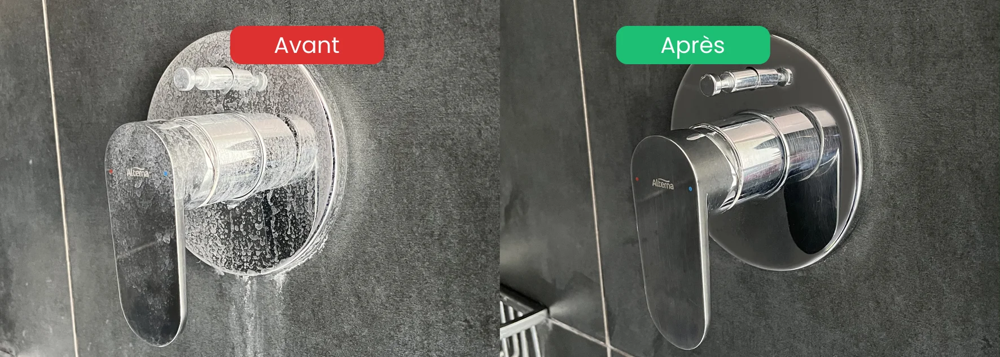

Cet article est le complément de notre guide Comment nettoyer le calcaire dans la salle de bain : les produits, les temps de pose et les méthodes changent en cuisine à cause du contact alimentaire.
- Précaution n°1 : privilégier des produits sûrs pour le contact alimentaire
- Précaution n°2 : rincer systématiquement chaque surface après détartrage
- Zones prioritaires : évier, robinets, hotte, bouilloire, lave-vaisselle
- Astuce pro : le savon noir en finition redonne brillance sans risque alimentaire
- Régularité : détartrer régulièrement plutôt qu'attendre un dépôt épais
Pourquoi le calcaire s'accumule vite dans la cuisine
La cuisine est l'une des pièces où le calcaire se dépose le plus rapidement. Trois raisons expliquent cette accumulation.
Une utilisation intensive de l'eau : robinet, évier, lave-vaisselle, bouilloire, cafetière. Chaque contact laisse une trace, et les gouttes d'eau qui sèchent déposent leurs sels de calcium et de magnésium.
Une eau généralement dure en Suisse romande : notamment dans la Broye, l'eau est particulièrement dure. Cela explique la rapidité d'entartrage des cuisines, plus rapide qu'en zones à eau douce.
La chaleur accélère le dépôt : bouilloire, casseroles, lave-vaisselle chauffent l'eau, ce qui accroît la précipitation des sels. C'est pourquoi les résistances des appareils s'entartrent en priorité.
La règle d'or : la sécurité alimentaire d'abord
Détartrer sa cuisine n'est pas la même chose que détartrer sa salle de bain. Trois principes de base à respecter absolument.
1. Privilégier des produits doux et écologiques
Les produits pH neutre ou légèrement acides comme le vinaigre blanc, l'acide citrique ou les détartrants écologiques certifiés contact alimentaire sont à privilégier. Les acides forts type pH 0.5 utilisés en salle de bain sont à éviter dans la cuisine pour un usage courant.
2. Rincer systématiquement
Après chaque application de détartrant (même écologique), rincez abondamment à l'eau claire. Un résidu de produit dans un évier ou sur un plan de travail peut entrer en contact avec des aliments.
3. Aérer et laisser sécher
Une fois le rinçage terminé, aérez la cuisine et laissez sécher les surfaces avant d'y déposer des aliments. Cela évite tout risque de transfert de résidus.
Détartrer l'évier
L'évier est la zone la plus utilisée et la plus visible. Un évier terne est le premier signe d'une cuisine qui manque d'entretien.
Évier en inox
- Vaporiser du vinaigre blanc chaud ou un détartrant écologique
- Laisser agir 5 à 10 minutes sur le calcaire
- Frotter avec une éponge non abrasive (jamais de tampon métallique)
- Rincer abondamment à l'eau claire
- Sécher avec un chiffon microfibre pour un résultat brillant
Évier en céramique
Même méthode, mais éviter tout produit abrasif qui rayerait la surface émaillée. Le vinaigre blanc suffit dans la plupart des cas.
Évier en résine
Attention : les éviers en résine (composite) supportent mal les acides forts. Privilégier des détartrants doux et rincer très rapidement.
Détartrer la robinetterie de cuisine
Les robinets se ternissent vite à cause du calcaire projeté à chaque utilisation.
Le corps du robinet
- Envelopper le robinet dans un chiffon imbibé de vinaigre blanc chaud
- Laisser agir 30 minutes à 1 heure
- Retirer le chiffon, frotter avec une éponge douce
- Rincer et sécher au chiffon microfibre
Le brise-jet (embout)
C'est la zone la plus entartrée, souvent invisible. Elle réduit le débit d'eau et projette des gouttes irrégulières.
- Dévisser le brise-jet (à la main ou avec une clé molette protégée par un chiffon)
- Tremper dans un bol de vinaigre blanc chaud pendant 1 à 2 heures
- Frotter avec une brosse à dents pour retirer les résidus
- Rincer abondamment et revisser

Détartrer la hotte aspirante
La hotte accumule graisse et calcaire, particulièrement autour du filtre et sur la surface inox.
Le filtre
- Démonter le filtre selon les instructions du fabricant
- Faire tremper dans de l'eau très chaude + liquide vaisselle dégraissant
- Ajouter une cuillère de bicarbonate de soude pour renforcer l'action
- Laisser tremper 30 minutes à 1 heure
- Rincer abondamment et laisser sécher avant de remonter
La surface extérieure inox
- Vaporiser du vinaigre blanc ou un nettoyant vitres
- Passer un chiffon microfibre dans le sens du polissage de l'inox (jamais en cercles, qui laissent des traces visibles)
- Sécher et lustrer avec un chiffon microfibre sec
Détartrer la bouilloire
C'est l'appareil le plus entartré de la cuisine, car il chauffe l'eau à haute température.
- Remplir la bouilloire d'un mélange 50/50 eau + vinaigre blanc
- Porter à ébullition
- Laisser agir 30 minutes après ébullition
- Vider et rincer plusieurs fois à l'eau claire
- Faire bouillir 1 à 2 fois de l'eau pure pour éliminer tout résidu
Détartrer la cafetière ou la machine à espresso
Pour les cafetières filtre :
- Verser un mélange 50/50 eau + vinaigre blanc dans le réservoir
- Lancer un cycle complet
- Faire ensuite 2 à 3 cycles avec de l'eau claire pour rincer
Pour les machines à espresso à capsules ou automatiques, utiliser le détartrant spécifique recommandé par le fabricant. Le vinaigre peut endommager certaines résines et joints internes.
Détartrer le lave-vaisselle
Un lave-vaisselle entartré consomme plus, lave moins bien et laisse des traces sur la vaisselle.
- Placer une tasse de vinaigre blanc dans le compartiment supérieur, vide
- Lancer un cycle à vide à la température la plus élevée
- Nettoyer aussi le filtre du fond en le retirant et le rinçant à l'eau chaude
- Répéter tous les 2 à 3 mois selon la dureté de l'eau
Tableau récapitulatif : produits et fréquence
| Zone | Produit adapté | Fréquence |
|---|---|---|
| Évier inox / céramique | Vinaigre blanc ou détartrant écologique | Hebdomadaire |
| Évier résine | Détartrant doux uniquement | Hebdomadaire |
| Robinet + brise-jet | Vinaigre blanc chaud | Tous les 2-3 mois |
| Hotte (filtre) | Dégraissant + bicarbonate | Tous les 2 mois |
| Hotte (extérieur) | Vinaigre blanc, chiffon microfibre | Hebdomadaire |
| Bouilloire | Vinaigre blanc ou acide citrique | Tous les mois |
| Cafetière / espresso | Détartrant fabricant | Tous les 1-2 mois |
| Lave-vaisselle | Vinaigre blanc + sel régénérant | Tous les 2-3 mois |
FAQ – Détartrer sa cuisine
Peut-on utiliser le vinaigre blanc partout dans la cuisine ?
Oui, dans la plupart des cas. Le vinaigre blanc est sûr pour l'inox, la céramique et le verre. En revanche, évitez-le sur la pierre naturelle (marbre, granit) et sur certains éviers en résine sensibles. Rincez toujours abondamment après application pour éviter tout résidu en contact avec les aliments.
À quelle fréquence détartrer sa cuisine ?
Les zones très utilisées (évier, robinet) demandent un entretien hebdomadaire léger. Les appareils (bouilloire, cafetière, lave-vaisselle) se détartrent tous les 1 à 3 mois selon la dureté de l'eau. En Suisse romande, où l'eau est souvent dure, un rythme mensuel est un bon compromis pour les appareils.
Le calcaire est-il dangereux pour la santé ?
Non, absolument pas. Le calcaire (sels de calcium et de magnésium) n'est pas nocif à la consommation. Le problème est purement esthétique et fonctionnel : appareils qui s'usent plus vite, surfaces qui ternissent, débits d'eau réduits, consommation d'énergie plus élevée.
Faut-il installer un adoucisseur d'eau pour éviter le calcaire ?
C'est une solution efficace pour les foyers en zone à eau très dure, mais elle représente un investissement. L'entretien régulier reste la meilleure alternative pour la plupart des cuisines. Un adoucisseur devient pertinent quand plusieurs appareils sont concernés et que la dureté locale est particulièrement élevée.
Les produits écologiques sont-ils aussi efficaces contre le calcaire en cuisine ?
Oui, pour un usage courant. Un détartrant écologique certifié fonctionne aussi bien qu'un produit chimique pour un entretien régulier. Pour du calcaire très incrusté et ancien, un produit professionnel peut être nécessaire, mais un entretien régulier évite d'en arriver là. En cuisine, les produits écologiques ont l'avantage supplémentaire de la sécurité alimentaire.
En résumé
Détartrer sa cuisine demande deux précautions particulières par rapport aux autres pièces : privilégier des produits doux et écologiques compatibles avec le contact alimentaire, et rincer systématiquement chaque surface après application. La règle d'or est la régularité : mieux vaut un entretien hebdomadaire léger qu'un détartrage massif tous les six mois. L'évier, la robinetterie et les appareils électroménagers sont les zones prioritaires. Le savon noir en finition sur l'inox donne un résultat éclatant qui retarde le retour du calcaire.